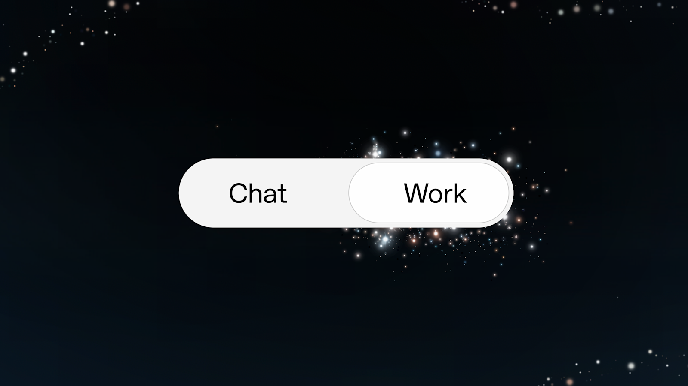

03 OpenAI 게시일 2026.09.09
OpenAI, 업무용 GPT-6 Astra 투입

OpenAI가 업무용 플래그십 모델을 새로 내놨다. 핵심은 말만 잘하는 모델이 아니라, 실제 업무 앱을 다루고 복잡한 작업을 끝내는 능력이다. 기업은 별도 통합 개발을 덜 하고도 기존 업무 흐름에 붙일 수 있다는 점을 내세웠다. 대신 권한 통제와 안전 장치도 함께 강조했다.
핵심 브리핑
OpenAI는 GPT-6 Astra를 ChatGPT Work, Codex, API에서 쓸 수 있게 했다. 회사는 이 모델을 자사 기업용 모델 가운데 가장 유능한 모델로 소개했다. 고급 추론, 컴퓨터 사용, 글쓰기와 디자인 판단 강화를 핵심 기능으로 내세웠다.
Astra는 API가 없는 업무용 앱도 화면을 보듯 살펴가며 작업할 수 있다고 OpenAI는 설명했다. 그래서 기업이 데이터 구조를 크게 바꾸거나 복잡한 연동을 먼저 만들지 않아도 기존 워크플로에 투입할 수 있다는 주장이다. 출시 초기 고객 사례로는 GPU 최적화, 재무제표 불일치 탐지, 브랜드 기준에 맞는 자료 제작이 제시됐다.
OpenAI 내부 사례도 공개했다. 개발팀과 마케팅팀은 Astra와 Codex로 다중 카메라 3시간 분량 영상을 편집해 소개 영상을 만들었다. 엔지니어링팀은 테스트 환경에서 Codex가 느려지는 메모리 할당 병목을 찾아냈고, 할당기를 바꾼 뒤 응답 지연을 25배 낮췄다. 다만 최고 메모리 사용량은 약 30% 늘었다.
가격도 공개됐다.
- 입력 가격: 100만 입력 토큰당 10달러
- 출력 가격: 100만 출력 토큰당 50달러
- API 고객은 승인된 엔드포인트에서 Zero Data Retention 사용 가능
- 기업용 기본 설정은 출시 시점에 비활성화
주요 트렌드
이번 발표의 차별점은 성능 설명보다 업무 투입 방식을 앞세웠다는 데 있다. OpenAI는 Astra가 기존 애플리케이션을 그대로 다룰 수 있으니, 기업이 연동 공사를 덜 하고도 첫날부터 쓸 수 있다고 주장했다. 기업 시장 경쟁이 모델 자체 성능에서 실제 업무 실행력으로 옮겨간 모습이다.
가격 전략도 눈에 띈다. OpenAI는 Astra가 적은 토큰과 적은 재시도로 과업을 끝내도록 학습됐다고 밝혔다. 토큰 단가뿐 아니라 과업당 총비용을 내세우는 방식이다.
안전 통제도 기업 판매 전략의 중심에 있다. 기업 관리자는 허용된 웹사이트와 데스크톱 앱만 열 수 있게 제한할 수 있다. 업로드와 다운로드, 브라우징 기록도 관리할 수 있다.
업계의 움직임
출시 후 며칠 안에 고객이 GPU 최적화, 재무제표 점검, 자료 제작에 Astra를 쓰기 시작했다고 OpenAI는 밝혔다. Simon Willison도 ChatGPT Work와 GPT-6 Astra로 달리기 경로를 만드는 사례를 다뤘다. 여러 매체와 커뮤니티가 새 모델의 실제 작업 능력에 관심을 두고 있다.
시사점과 체크포인트
금융IT 기업에는 재무 문서 검토, 내부 보고서 작성, 운영 화면 점검 자동화 같은 용도가 먼저 떠오른다. API가 없는 사내 시스템도 화면 단에서 다룰 수 있다면 적용 범위가 넓어진다.
도입 전에는 통제 장치부터 살펴야 한다.
- 어떤 시스템에 화면 접근을 허용할지 보안팀이 정해야 한다
- 승인 전 필수 확인 작업을 어디에 걸지 운영팀이 설계해야 한다
- 다운로드 파일과 브라우징 기록을 어떻게 남길지 감사팀이 정해야 한다
- 재무제표나 고객정보처럼 민감한 데이터에서 Zero Data Retention 대상 엔드포인트가 맞는지 확인해야 한다
안전 수치도 함께 봐야 한다. OpenAI는 내부 컴퓨터 사용 안전 벤치마크에서 Astra의 의도치 않은 결과가 GPT-5.6 Sol보다 89% 적었고 Claude Fable 5.1보다 74.7% 적었다고 밝혔다. 다만 자체 평가이며, 추가 확인과 자동 검토를 붙였을 때 성능이 더 좋아졌다는 조건이 함께 붙는다.
주요 용어
원문 정보
제목: GPT-6 Astra: The next generation in intelligence for work
게시일: 2026.09.09
출처 URL: https://openai.com/index/gpt-6-astra-next-generation-work